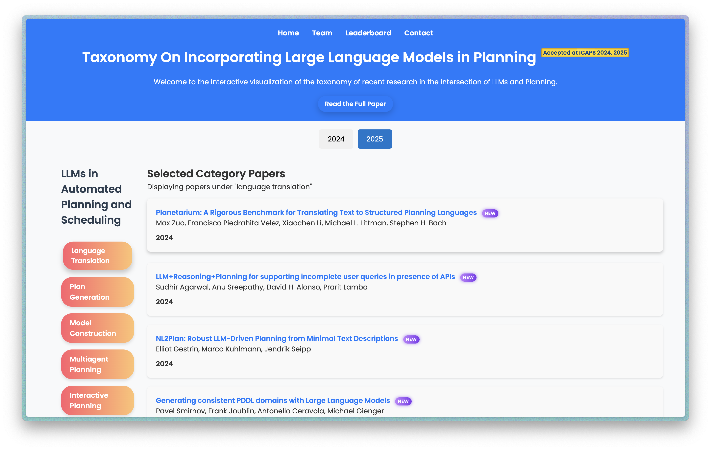

Literature Exploration ToolTeam: Bernardo Denkvitts, Bharath Muppasani, Nitin Gupta, Vishal Pallagani, Biplav Srivastava Key IdeaThis project studies how scientific fields evolve and builds tools that help researchers move from keyword search to structured exploration. Given a query, the system retrieves recent papers, groups them into coherent themes, assigns representative keywords, and visualizes how those themes change over time. Quick Start
The Literature Exploration ToolThe current tool generalizes lessons from our ICAPS 2024 and ICAPS 2025 LLMs-in-planning surveys into a domain-flexible literature exploration system. A public prototype and feedback survey are available now (see above). The tool has the following features that support literature evolution understanding and exploration:
Broader Line of WorkThis tool is connected by a sequence of literature understanding projects: first, a curated taxonomy of LLMs in automated planning and scheduling; second, semi-automated updates that detect category drift; and now, a more general tool for exploring literature evolution in any queried domain. ICAPS 2024: Manual taxonomy. A survey of 126 papers on LLMs in Automated Planning and Scheduling organized the field into eight categories, including plan generation, language translation, model construction, tool integration, and interactive planning. [2024 Paper] ICAPS 2025: Evolving categories. A semi-automated analysis added 47 papers, reported drift across existing categories, and surfaced emerging categories such as goal decomposition and replanning. [2025 Paper] Interactive visualization. The earlier visualization tool remains a concrete example of the project goal: making research categories browsable, updateable, and useful for researchers who need to understand a fast-moving field.  Representative Publications
Category DriftThe ICAPS 2025 update showed how a taxonomy changes as the field matures: some categories shrink in relative share, others grow, and new categories appear as researchers ask more specific questions.
2020
2021
2022
2023
2024
Down
Plan generation
Still dominant in D2, but its relative share decreases.
Down
Language translation
Declines as translation is treated as necessary but insufficient for planning.
Down
Interactive planning
Decreases as end-to-end interactive use remains difficult to scale reliably.
Up
Model construction
Grows and becomes the second-highest category in D2.
Stable
Heuristics optimization
Maintains a stable presence across the two datasets.
Up
Tool integration
Increases and reaches the third-highest share in D2.
Down
Brain-inspired planning
Declines as work shifts toward concrete neuro-symbolic architectures.
Down
Multi-agent planning
Decreases as coordination reliability remains a major challenge.
New
Goal decomposition
Emerges in D2 with 4 papers focused on subgoal structuring.
New
Replanning
Emerges in D2 with 1 paper centered on plan adaptation after failure. AcknowledgmentsWe thank Aarohi and Thrinadh for their contributions as interns on this project. |